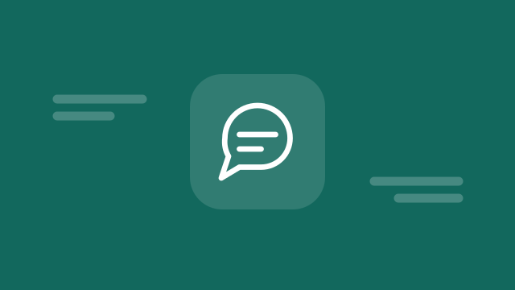

打开课堂工具
ChatGPT 用来提问、写文字和做图片；Google Flow 用来生成视频。分身课用 Flow 应用，照片短片课用手机网页。

ChatGPT提问、文案和图片打开 ChatGPTGoogle Flow把照片变成短片 · 手机网页打开 Flow 网页Google Flow · Android建立和使用自己的分身 · Android 应用前往 Google PlayGoogle Flow · iPhone建立和使用自己的分身 · iPhone 应用前往 App Store使用自己的账号；课堂不需要购买订阅
免费额度怎样安排？
课堂安排一次 ChatGPT 图片生成和一次照片上传；不是免费额度保证。Flow 安排两个视频：分身预计10点，产品短片预计30点，共40点。生成前检查实际报价。
Flow 免费账号目前每天有50点额度，不累积。费用按模型和作品数量计算；以生成前显示的花费为准。
本课安排两个视频，每次选择 x1。额度不足或暂时无法生成时，按顺序看操作图、准备自己的图片和提问，稍后再试。无需购买额度。
出现限额时，停止重复尝试，按画面提示稍后再试。先看本课例子，准备自己的文字和提问；文字练习另开文字聊天。不需要订阅、共用账号。
怎样回到指南？
工具会在新标签页打开。点浏览器的标签页按钮，选回本指南。